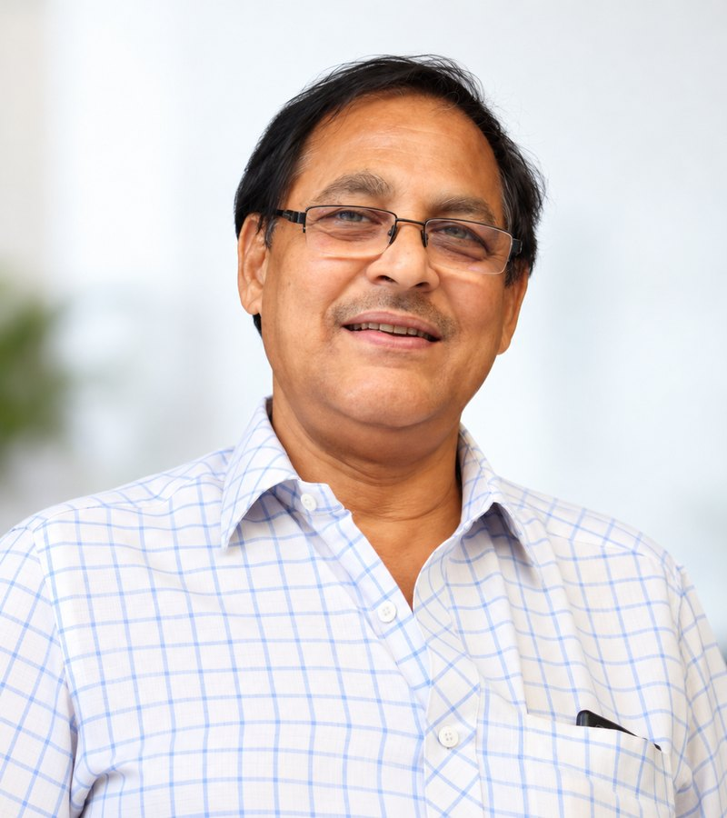

01
Dr. C.N. Murthy
BAMS Founder · Family PhysicianDr. C.N. Murthy founded Prasanthi Hospitals as a family-run multi-speciality centre. He provides family physician consultations at the hospital and continues to play an important role in its patient-centred approach.
He works alongside Dr. C.S.K. Aditya in the hospital's personal and integrative approach to patient care.
Profile & accomplishmentsView Profile →